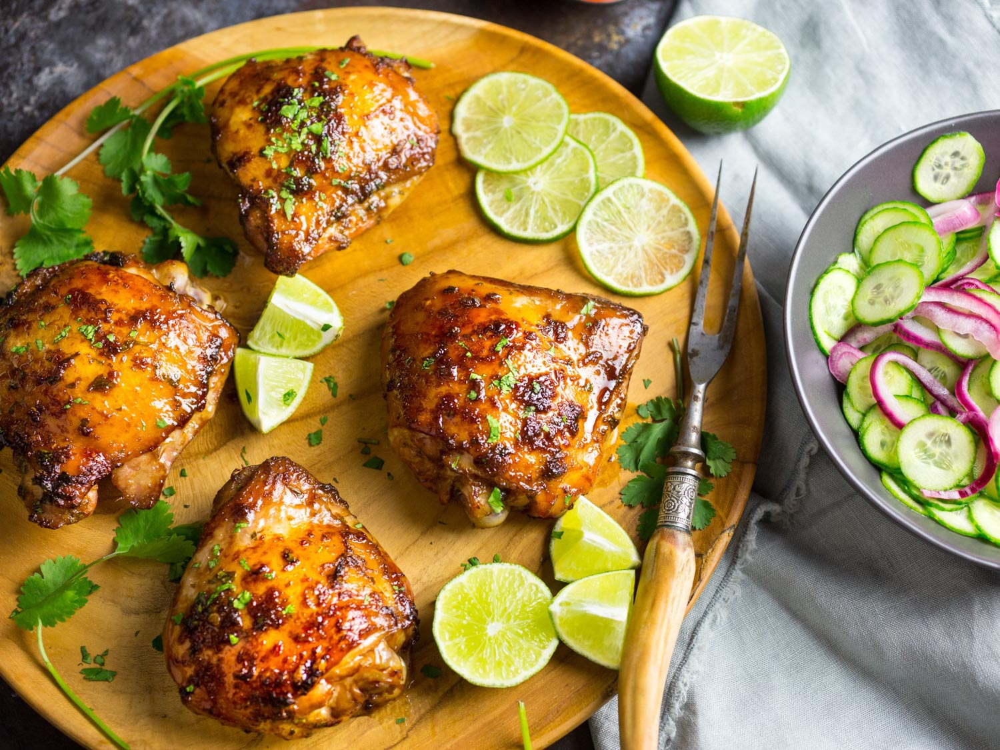
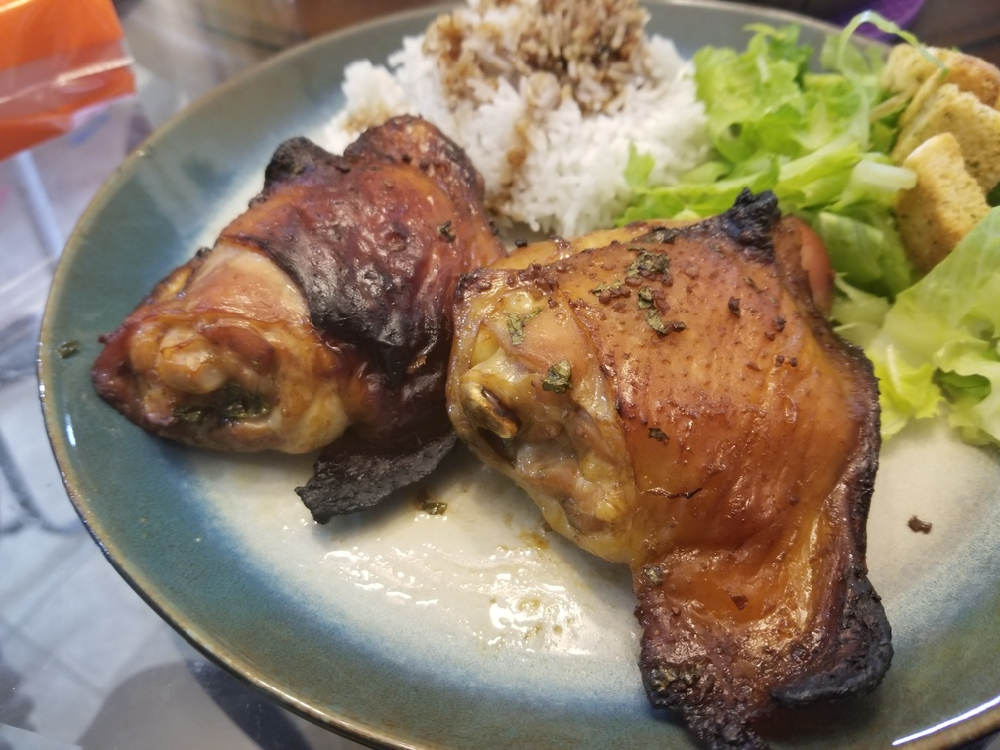

Vietnamese-Style Baked Chicken
Originally from: https://www.seriouseats.com/recipes/2017/03/vietnamese-style-baked-chicken-recipe.html

Ingredients
- 2 pounds (900g) bone-in, skin-on chicken thighs
- 1/4 cup (60ml) soy sauce
- 1/4 cup (60ml) Asian fish sauce, such as Red Boat
- 1/4 cup (55g) palm or dark brown sugar
- 1 tablespoon (10g) minced peeled fresh ginger
- 2 teaspoons (10ml) hot chili-garlic paste (sambal oelek)
- 1 1/2 tablespoons (20ml) fresh juice from 1 lime
- 1 teaspoon (5g) finely grated zest from 1 lime
- 3 medium cloves garlic, minced or grated (about 2 teaspoons)
- 2 packed tablespoons (1/4 ounce) fresh cilantro leaves and tender stems, finely chopped
- 2 tablespoons (30ml) grapeseed or other neutral oil
- Sliced limes and cilantro leaves, for garnish
Directions
- Mix all ingredients together and add to ziplock to marinate for 1 - 4 hours.
- Place chicken on wire rack on top of foil lined baking sheet. Cook in 425° over for ~35 minutes or until done (160° internal temp). Can place under broiler for crisper skin.
Notes
-
2020-09-06 - Have made multiple times with slight variations in marinade. All have turned out pretty similar and good.
